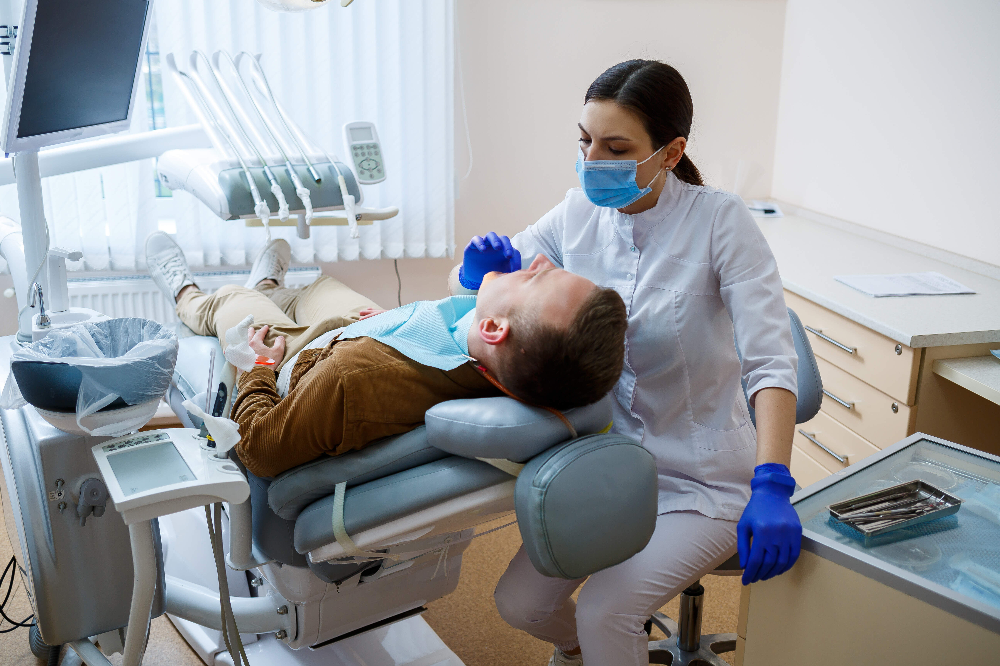
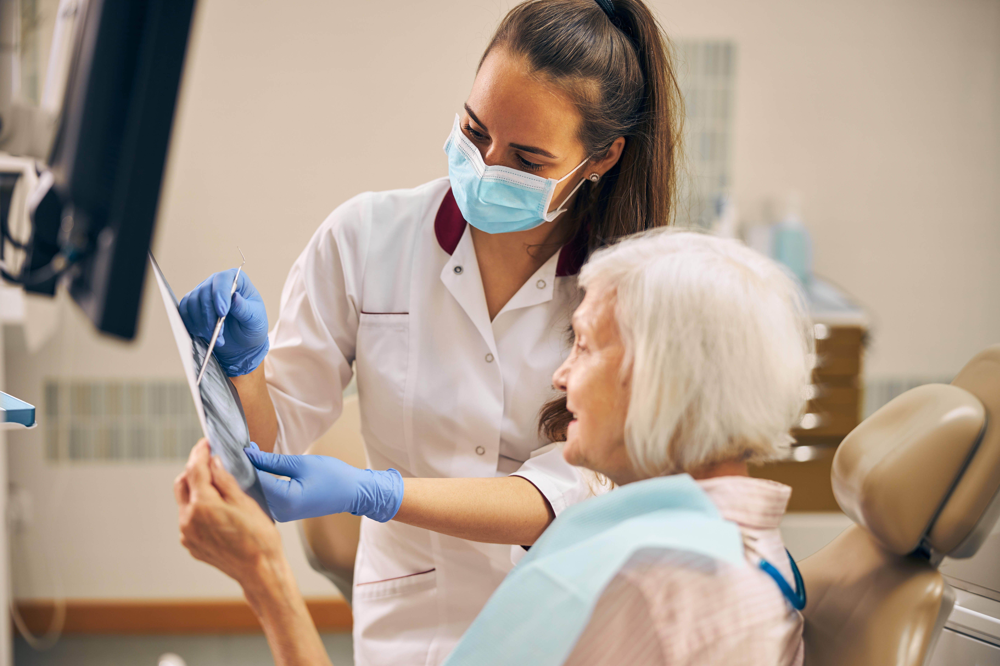
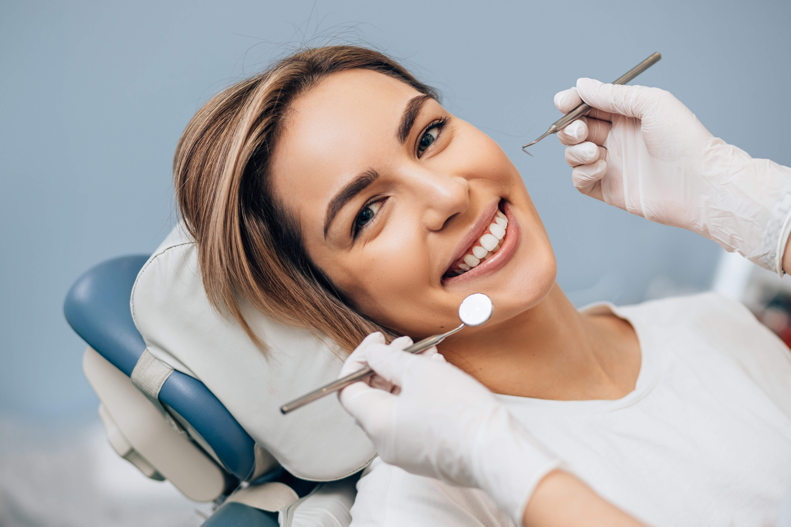
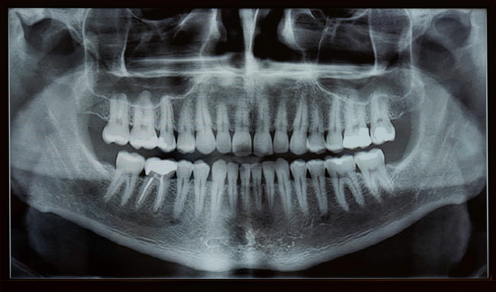

About Us
Preventive

We emphasize building good doctor-patient relationships and providing preventative care...
- Check-ups
- Oral Hygienes
- Nutritional Guidance
Restorative
Repairing damaged or missing teeth can restore normal chewing, speech, and aesthetic functions...
- Dental restoration
- Orthodontics
- Dental implants
Cosmetic Dentistry
Improve the appearance of teeth and boost confidence in your smile...
- Teeth whitening
- Cosmetic restoration
- Improved dental appearance


- Digital X-Rays
- High-resolution images with significantly less radiation exposure.
- Intraoral Cameras
- Provides detailed images for early detection.
- Laser Dentistry
- Minimally invasive procedures with faster healing.
- CAD/CAM Technology
- Creates precise dental restorations in a single visit.
- 3D Printing
- Used for accurate dental models and surgical guides.
- Teledentistry
- Virtual consultations offering easier access to care.



- Our annual dental check-up service:
- Physical Examination
- A thorough examination of your overall dental health.
- Cleanings
- Ensuring that your teeth are clean and free from plaque and tartar.
- X-Rays
- Assessment and preventive measures against common dental issues.
- Dental Check-Up
- Evaluation of your dental health and advice on care.
- Nutritional Guidance
- Recommendations for maintaining a healthy smile.
- Blood Tests or Laboratory Work
- Additional tests when needed based on age and history.